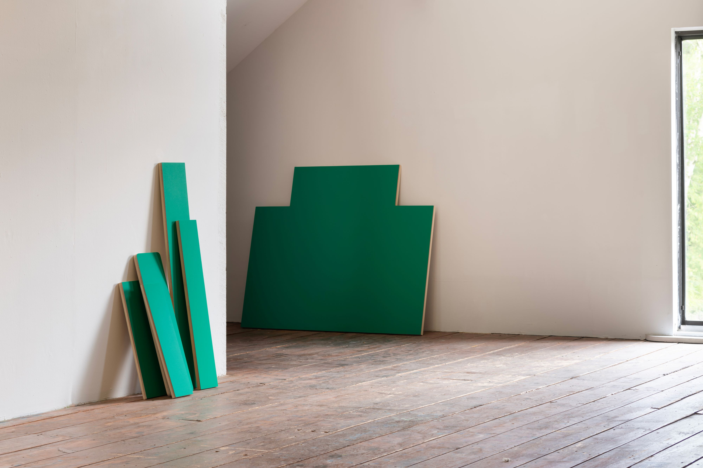
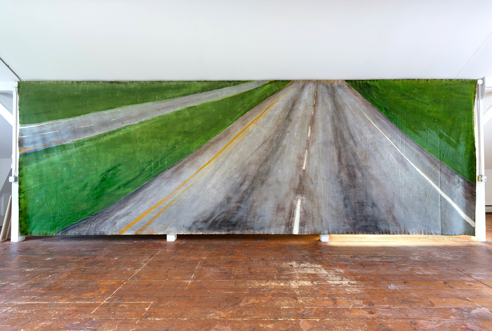
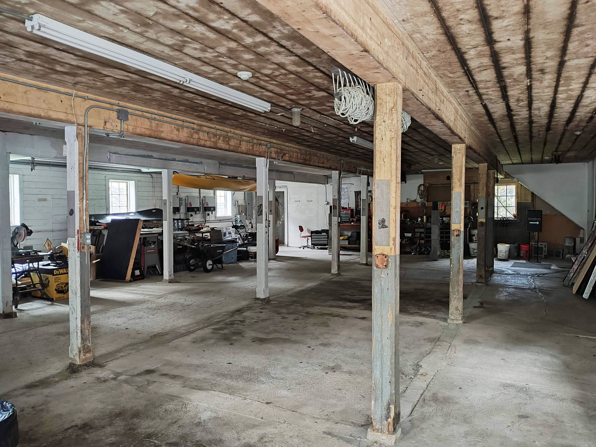
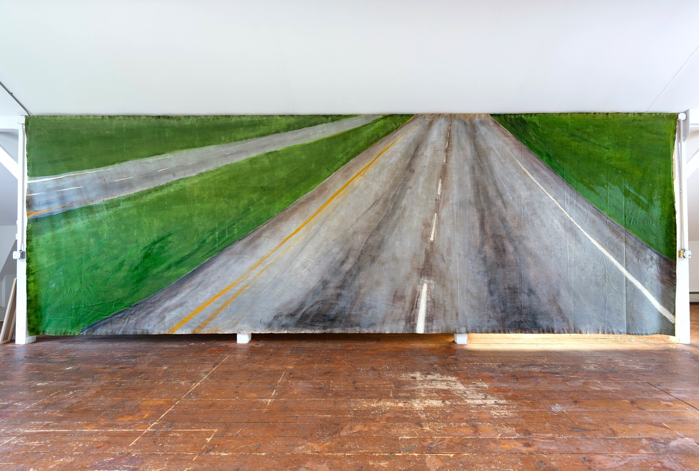
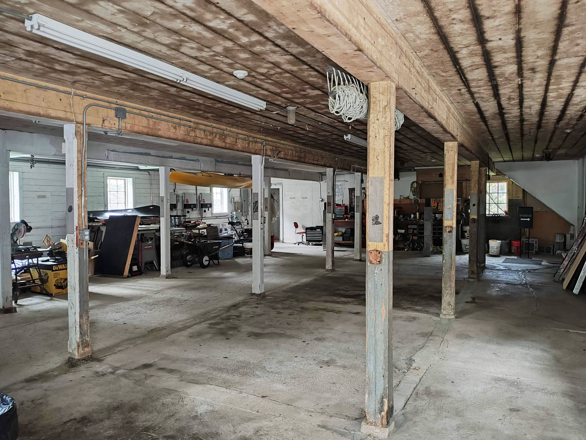

persimmon, chipmunk, hickory, squash
Persimmon, chipmunk, hickory, squash, moose, opossum, caribou.
Words taken from Algonquian languages populate the vernacular of the American landscape. They condition the designatory and descriptive capacity of American English in relation to the environs which it came to dominate as the lingua franca of enclosure. Words like these, of flora and fauna, bear a more complete assimilation than the Native words and names typically reserved for street signs, cities, states, and infrastructure. Those are different kinds of landscape words. Taconic, Seekonk, Connecticut, Massachusetts, and the like.
Here, there are persimmons, chipmunks, hickory, squash, moose, opossum, and caribou: both vegetation and animal. But these rest on the strata of minerals beneath our feet. Rocks crushed, overturned, buried deep, and fortified. Their names mean obduracy. Yet, as architecture, comprising buildings and walls, they enunciate the enduring but fragile physicality of property relations. The divergence between land and its overdetermination by capital expands in this interplay between figure and ground.
- L.E.
PDF of booklet published with exhibition.This exhibition was supported by the Al Held archive fellowship during the 2023-2024 year.
Country (10 minute sample of radio piece)
Gallery
 


